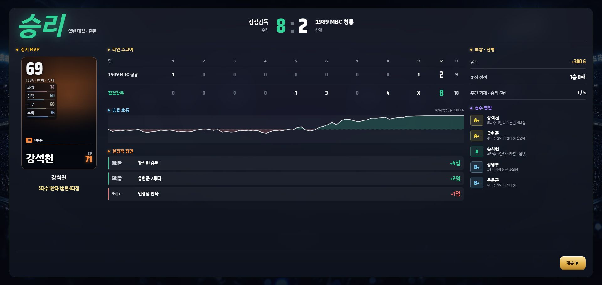
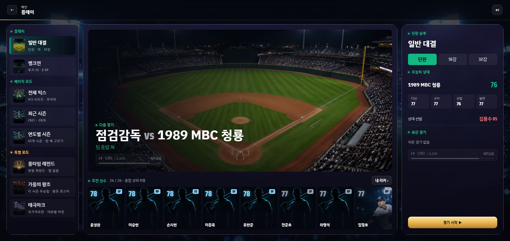

내 지시
5회초
병살 찬스
직구 · 바깥 낮게
병살타
+9%
6회초
선두 타자 막기
직구 · 바깥 낮게
삼진
+4%
땅볼
삼진
뜬공
홈런
땅볼
5회말
김충민 희생플라이
+1점
1회초
김재박 2루타
+1점
B
안경현
4타수 1안타 1볼넷
B
이재만
9타자 2삼진 무실점
땅볼
삼진
뜬공
홈런
땅볼
내 지시
5회초
병살 찬스
직구 · 바깥 낮게
병살타
+9%
6회초
선두 타자 막기
직구 · 바깥 낮게
삼진
+4%

상대 선발
SP
김용수
85
구위
88
제구
84
체력
79
안정
90
최근 경기
승
패
승
-
-
상대 타순
최근 경기
승
패
승
-
-
경기 보상
승
300 G
무
180 G
패
120 G
주간 과제 · 승리 5번
1 / 5